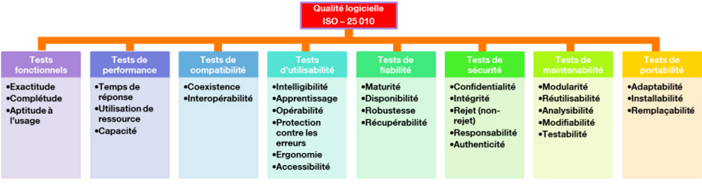

header: 'Software Delivery Life Cycle Course' footer: 'Julien Dauliac -- ynov.casualty925@passfwd.com'
Software Delivery Life Cycle
Module Objective
- Cover software delivery life cycle methods
- Understand the importance of CI/CD
- Measure the performance of CI/CD
- Learn basic CI/CD architectures
- Know how to code a basic CI/CD
Introduction to CI/CD
Definitions:
Software Delivery Life Cycle
SDLC (Software Development Life Cycle) is a process that enables the production of high-quality software at the lowest cost within the shortest time frame.
In French: Cycle de développement logiciel
Framework:
- Agile
- DevOps
CI
Continuous Integration (CI) involves regularly and automatically integrating developers' source code into a shared repository. Each code modification triggers automated tests to detect errors as early as possible.
- Test automation
- Supply chain automation
- Code review automation
Supply Chain
Code used to build software
CD
- Automation of delivery
- Automation of deployment
In Continuous Delivery, versions are ready to be deployed but aren't deployed automatically.
A picture is worth a thousand words:

QQOQCCP
| What | CI/CD is an approach for automating software development processes. |
|---|---|
| Who | It involves developers, testers, and automated tools. |
| Where | It can be used in any development environment. |
| When | It's applied throughout the development cycle. |
| How | It automates compilation, testing, deployment, and feedback management. |
| Why | It aims to improve quality, accelerate development, reduce errors, foster collaboration, and enable frequent deployments. |
5 Whys of CI/CD
- Project management method that finds radical solutions to a problem.
- CI/CD is a radical solution.
Stability
Problem: Deployments frequently fail in production.
- Why do deployments fail in production?
Security
Problem: Too many security vulnerabilities in production.
Also
- Automate labor:
#DEVOPS🌻 - Achieve economies of scale 🪜
- Reduce stress 🧘♂️
Entities
- Culture: DevOps
- Agile management: Release train
- Code: Software Development Life Cycle
- Platform: Software forge (GitLab or others)
- Craftsmanship:
Humans + Tools = 🤟
DEVOPS 💓 CICD
- A deeply DevOps practice
- Automate labor: #DEVOPS 🌻
- Collective management of non-functional aspects
- Test everything that can be tested
Non-functional aspects
- A specification: RFC ISO 25 010
- ISQTB

Keys performance indicators (KPI)
It doesn’t work, it’s too slow, it’s broken.

- Managers don’t always know what's best for non-functional aspects.
- An alternative to non-factual directives.
- ⚠️ KPI can become a tool for team pressure: Data isn't facts, and facts aren't goals.
My Favorite KPI 🔑
- Automation factor
- Technical debt
- Code coverage
- CVE rate
- Automated test failure rate
DORA Metrics
- Deployment frequency
- Change execution delay
- Mean time to recovery
- Change failure rate

CI/CD Architecture 🏗️
CI/CD Geography 🗺️
- Local to your development machine (on Linux or other OS)
- Software forge: GitLab and others…
- External tools: SonarQube, Argo-CD,
CI/CD Timeline 🕐
Software Development Life Cycle (SDLC)

CI/CD 10000ft flight height - The Standard Documentation
4 Steps

- Linting: The linting phase ensures that the codebase is in good shape. This may include checking formatting, style, and auto generated code.
- Building:
Builds should adhere to these properties:
- idempotence
- efficiency
- speed
- Deployment:
-
Tool Method Description ansible⬇️ Code and operations are sent to production from a client machine using SSH. fluxCD⬆️ The fluxCDserver listens to your software forge to pull updates.
-
Monorepo vs Polyrepo
- The organization of repositories is a crucial aspect of CI/CD.
- Splitting or not splitting projects will determine the ease of adopting tools and practices…
Polyrepo
- Advantages:
- Isolation and independence between projects.
- Easier management of individual repositories.
- Improved performance and scalability, but more complex maintenance.
- Disadvantages:
- Harder project coordination.
- Risk of inconsistency and divergence.
- Tedious maintenance with multiple repositories.
Monorepo
- Advantages:
- Easier collaboration and code sharing.
- Centralized version and security management.
- Possibility of frequent merge conflicts and complex dependencies.
- Disadvantages:
- Frequent merge conflicts.
- Errors in one project can impact the entire system.
- More complex management as it scales.
How to split?
- Team topology
- Projects should mirror teams:
- If CI/CD is a shared responsibility ➡️ Monorepo
- If each team has its own DevOps (developers or SRE, OPS) ➡️ Polyrepo
- Projects should mirror teams:
And for CI/CD
- Monorepo for CI/CD: